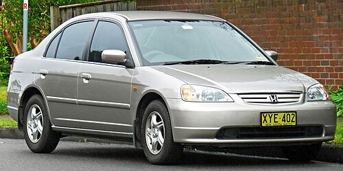

Seventh generation (2000)
Released for the 2001 model year, it introduced MacPherson struts and the K-series engine, improving cabin space with a flat rear floor. The first Civic Hybrid appeared this generation.
Released for the 2001 model year, it introduced MacPherson struts and the K-series engine, improving cabin space with a flat rear floor. The first Civic Hybrid appeared this generation.
Introduced split global platforms—one for sedan/coupe and another for the European hatchback. Futuristic styling and continued Si and Type R trims marked this generation's innovation.

Launched with sedan, coupe, hatchback, and wagon variants. Updated in 2013 to improve design and refinement. A hybrid option and the FK2 Type R were also introduced.
Unified Civic globally on a new compact platform. The design adopted a fastback profile, digital driver interface, and introduced the first U.S.-sold Type R.
Revealed in 2021 as sedan and liftback forms, it refined the Civic's mature styling and tech. The FL5 Type R continues Honda's high-performance legacy worldwide.